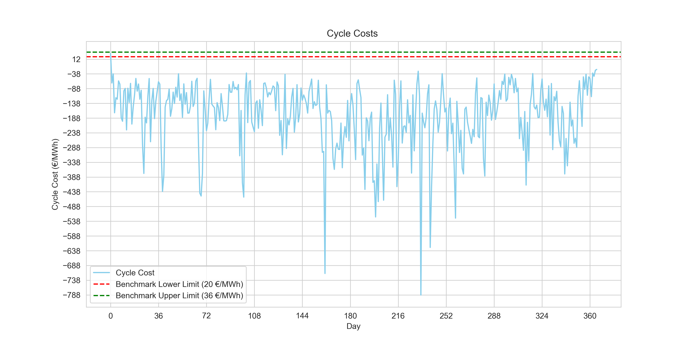

This post documents my experience applying some data science techniques to intraday energy trading. The goal going in was to develop an algorithm that maximises profit by buying energy during low market prices and selling at peak times, while estimating cycle costs and adhering to a real battery's operational envelope.
The full theoretical background is in the Energy Markets Challenge brief on GitHub. It explains each constraint and the dynamics of energy storage systems. The constraints, in plain terms:
- Nominal power: 2 MW
- Usable capacity: 4 MWh
- Storage efficiency: 90%
- Target average cycles per 24-hour horizon: 1.5
- Maximum cycles per 24-hour horizon: 2.5
The data.
Library imports first:
# Importing necessary libraries for this project
import numpy as np
import pandas as pd
import matplotlib.pyplot as plt
import seaborn as sns
from itertools import combinations
from scipy.optimize import linprog# Import data
market_prices_df = pd.read_csv("market_prices.csv", sep=';',
parse_dates=['timestamp_UTC'])
market_prices_df.info()<class 'pandas.core.frame.DataFrame'>
RangeIndex: 35040 entries, 0 to 35039
Data columns (total 2 columns):
# Column Non-Null Count Dtype
--- ------ -------------- -----
0 timestamp_UTC 35040 non-null datetime64[ns]
1 price_idm_continuous_qh_vwap_EUR/MWh 35040 non-null float64
dtypes: datetime64[ns](1), float64(1)
memory usage: 547.6 KBThe raw data contains 35,040 observations (15-minute intervals) of MWh prices in euros. I transform and group this into 366 days × 96 observations to simplify analysis, and define the constraints early.
market_prices_df = market_prices_df.rename(
columns={market_prices_df.columns[1]: 'EUR/MWh'})
market_prices_df['date'] = market_prices_df['timestamp_UTC'].dt.date
daily_price_data = (market_prices_df.groupby('date')['EUR/MWh']
.apply(list)
.reset_index())#Constraints:
nominal = 2 # in MW
capacity = 4 # in MWh
efficiency = 90 / 100 # 90%
target_average_cycles = 1.5
max_cycles_per_day = 2.5V1. The combinatory approach.
The initial algorithm consists of two components: cycle calculation and cost estimation.
1. Determining best trading cycles in the day
calculate_daily_cycles identifies the most profitable daily transactions based on the expected
spread (selling price minus buying price, adjusted for efficiency). It calculates all possible spreads, sorts them
by descending profitability, and limits them within operational bounds.
# Calculate the daily cycles with the most spread,
# considering storage limitations and efficiency.
def calculate_daily_cycles(price_data):
num_intervals = len(price_data)
best_spreads = []
for buy_time, sell_time in combinations(range(num_intervals), 2):
spread = (price_data[sell_time] * efficiency * efficiency)
- price_data[buy_time]
best_spreads.append((spread, buy_time, sell_time))
best_spreads.sort(reverse=True)The function tracks used intervals to avoid overlaps, computes the exact energy amounts (bought, charged, discharged), calculates profit, and halts once the maximum daily cycles limit is reached.
Greedy cycle selection · main loop PYTHON
cycles = []
used_intervals = set() # set for faster lookup
for spread, buy_time, sell_time in best_spreads:
if buy_time not in used_intervals and sell_time not in used_intervals:
required_input_energy = capacity / efficiency
bought_energy = min(nominal * (sell_time - buy_time) * 0.25,
required_input_energy)
charged_energy = bought_energy * efficiency
discharge_energy = charged_energy * efficiency
profit = (price_data[sell_time] * discharge_energy
- price_data[buy_time] * bought_energy)
cycles.append({
'buy_time': buy_time,
'sell_time': sell_time,
'bought_energy': bought_energy,
'charged_energy': charged_energy,
'discharge_energy': discharge_energy,
'buy_price': price_data[buy_time],
'sell_price': price_data[sell_time],
'spread': f'{round(spread, 2)} EUR',
'profit': f'{round(profit, 2)} EUR',
})
used_intervals.update(range(buy_time, sell_time + 1))
if len(cycles) >= max_cycles_per_day:
break
return cycles
test_day_data = daily_price_data['EUR/MWh'].iloc[1]
calculate_daily_cycles(test_day_data)2. Estimate the cost of cycles
estimate_cycle_costs computes the net cost per unit of energy cycled based on the purchased input
energy. Total purchase cost minus total sales revenue. A negative net cost signifies profit.
def estimate_cycle_costs(cycles):
total_purchase_cost = 0
total_sales_revenue = 0
total_energy_cycled = 0
for cycle in cycles:
total_purchase_cost += cycle['bought_energy'] * cycle['buy_price']
total_sales_revenue += cycle['discharge_energy'] * cycle['sell_price']
total_energy_cycled += cycle['bought_energy']
net_cost = total_purchase_cost - total_sales_revenue
cycle_cost = net_cost / total_energy_cycled
return cycle_cost
test_day_cycles = calculate_daily_cycles(daily_price_data['EUR/MWh'].iloc[1])
estimate_cycle_costs(test_day_cycles)3. Visualising results
Visualising buy and sell times confirms the algorithm correctly selects profitable cycles.

Comparing cycle costs for the first 10 days:


print(f"{((daily_price_data['cycle_cost'] >= 20) & (daily_price_data['cycle_cost'] <= 36)).sum()} day(s) within benchmark.")Output:
1 day(s) within benchmark.The first day yielded costs within the benchmark, but analysing just a handful of points suggests a rolling horizon approach (as recommended by the challenge) might be more effective.
V2. The rolling horizon approach.
Instead of processing an entire day at once, a rolling horizon analyses a smaller time window and continuously shifts forward by a defined step size, allowing the algorithm to dynamically adapt to recent market prices.
1. Constructing the rolling horizon
def calculate_daily_cycles_rolling_horizonv2(price_data,
current_avg_cycles,
horizon_length=8,
step_size=1):
num_intervals = len(price_data)
best_cycles = []
# Dynamically change max cycles per day based on the target
# and current average number of cycles
max_cycles_per_day = min(2.5, max(1,
target_average_cycles + (target_average_cycles - current_avg_cycles)))I dynamically adjust the maximum daily cycles based on the gap between the target and current average, which helps the algorithm align with long-term goals.
# Loop over data with the rolling horizon
for start_time in range(0, num_intervals, step_size):
end_time = min(start_time + horizon_length, num_intervals)
best_spreads = []
return best_cyclesThe loop shifts the rolling window forward by step_size. For each window, it searches for profitable
cycles using the same combinatory logic but against the modulated cycle allowance.
current_avg_cycles = 0
num_days = len(daily_price_data)
for i in range(num_days):
daily_data = daily_price_data['EUR/MWh'].iloc[i]
cycles = calculate_daily_cycles_rolling_horizonv2(daily_data, current_avg_cycles)
cycle_cost = estimate_cycle_costs(cycles)
daily_price_data.at[i, 'cycle_cost'] = cycle_cost
current_avg_cycles = ((current_avg_cycles * i) + len(cycles)) / (i + 1)Iterating through the entire dataset, the rolling average cycle count updates continuously, ensuring each cycle assessment stays responsive to up-to-date data.
2. Identifying the best parameters
To optimise the strategy, I tested various horizon lengths and step sizes to maximise the number of days meeting the benchmark cycle costs.
Parameter sweep · horizon × step PYTHON
# Trying out different parameters
results = []
for horizon_length in [4, 8, 12, 16, 20, 24, 28, 32]:
for step_size in [1, 2, 4, 6, 8, 10]:
daily_cycle_costs = daily_price_data['EUR/MWh'].apply(
lambda x: estimate_cycle_costs(
calculate_daily_cycles_rolling_horizon(
x, horizon_length=horizon_length, step_size=step_size)))
results.append({
'horizon_length': horizon_length,
'step_size': step_size,
'days_within_benchmark': (
(daily_cycle_costs >= 20) & (daily_cycle_costs <= 36)).sum()
})
results_df = pd.DataFrame(results)
results_df.sort_values(by='days_within_benchmark', ascending=False).head()Output:
| horizon_length | step_size | days_within_benchmark |
|---|---|---|
| 8 | 1 | 90 |
| 8 | 2 | 90 |
| 8 | 4 | 89 |
| 8 | 6 | 89 |
| 8 | 10 | 89 |
The code iterates over a predefined set of horizon lengths and step sizes, applying each combination to the daily price data. For each set of parameters, it calculates the cycle costs and aggregates the number of days where the cycle cost falls within the benchmark range. Horizon length of two hours and step sizes of 1 and 2 yielded the highest results.
3. 89 new observations within benchmarks
plt.figure(figsize=(12, 6))
plt.plot(daily_price_data.index, daily_price_data['cycle_cost'],
color='skyblue', label='Cycle Cost')
plt.axhline(y=20, color='r', linestyle='--',
label='Benchmark Lower Limit (20 €/MWh)')
plt.axhline(y=36, color='g', linestyle='--',
label='Benchmark Upper Limit (36 €/MWh)')
plt.xlabel('Day'); plt.ylabel('Cycle Cost (€/MWh)')
plt.title('Cycle Costs w/ Rolling Horizon')
plt.legend(); plt.grid(True)
plt.show()
Output:
90 day(s) within benchmark.
Current Average Number of cycles: 1.997I raised the benchmark-compliant days to 90. However, while the vast majority of daily cycle costs are strongly negative (demonstrating solid absolute profit), establishing a robust algorithm that cleanly sits within the specific arbitrary positive benchmark range will require a heavier-handed tool.
V3. The constrained optimisation approach.
Upon encountering this obstacle, I had to research how to approach the project. My only data-science experience so far had been machine-learning. On a data-science forum, while debating my combinatory rolling-horizon approach, it was pointed out that perhaps the answer was a constrained optimisation approach. Although ignorant of it at first, I found it extremely fitting to the problem at hand. The approach attempts to identify the best ways to maximise a function within a set of hard and soft constraints. Sounds familiar?
It uses linear programming to maximise the trading strategy's profitability. By utilising the entire dataset from the outset, the optimisation model takes a holistic view of the data, analyses all potential cycles collectively, and determines the optimal set that could achieve the maximum possible profit. It compiles all possible trading cycles upfront. Each cycle's profitability is assessed based on prices at potential buy and sell times, factoring in operational constraints such as energy capacity, charge/discharge efficiencies, and the overall number of cycles allowed.
This contrasts with a rolling horizon, which looks at the data in chunks, optimising over a short window and rolling that window forward through the dataset, iteratively recalculating optimal cycles as new price data becomes available.
So I chartered out to use a solver from SciPy, Python's famous package for mathematical
computations.
1. Defining decision variables
First, generate_possible_cycles enumerates all possible daily buying and selling cycles to serve as
decision variables. It works identically to the initial combinatory approach but omits sorting or halting at
maximum limits.
Cycle enumeration · all days PYTHON
# Generate all possible cycles for one day,
# important for defining decision variables.
def generate_possible_cycles(price_data, min_length=1):
num_intervals = len(price_data)
possible_cycles = []
for buy_time, sell_time in combinations(range(num_intervals), 2):
if sell_time - buy_time >= min_length:
spread = (price_data[sell_time] * efficiency * efficiency)
- price_data[buy_time]
required_input_energy = capacity / efficiency
bought_energy = min(nominal * (sell_time - buy_time) * 0.25,
required_input_energy)
charged_energy = bought_energy * efficiency
discharge_energy = charged_energy * efficiency
profit = (price_data[sell_time] * discharge_energy
- price_data[buy_time] * bought_energy)
possible_cycles.append({
'buy_time': buy_time,
'sell_time': sell_time,
'bought_energy': bought_energy,
'charged_energy': charged_energy,
'discharge_energy': discharge_energy,
'buy_price': price_data[buy_time],
'sell_price': price_data[sell_time],
'spread': spread,
'profit': profit,
})
return possible_cycles
def generate_possible_cycles_for_all_days(daily_price_data, min_length=1):
all_possible_cycles = []
for day_index, price_data in enumerate(daily_price_data['EUR/MWh']):
daily_possible_cycles = generate_possible_cycles(price_data, min_length)
for cycle in daily_possible_cycles:
cycle['day_index'] = day_index
all_possible_cycles.extend(daily_possible_cycles)
return all_possible_cycles
all_possible_cycles = generate_possible_cycles_for_all_days(daily_price_data)
all_possible_cycles_df = pd.DataFrame(all_possible_cycles)
all_possible_cycles_df.info()Output:
<class 'pandas.core.frame.DataFrame'>
RangeIndex: 1664032 entries, 0 to 1664031
Data columns (total 10 columns):
# Column Non-Null Count Dtype
--- ------ -------------- -----
0 buy_time 1664032 non-null int64
1 sell_time 1664032 non-null int64
2 bought_energy 1664032 non-null float64
3 charged_energy 1664032 non-null float64
4 discharge_energy 1664032 non-null float64
5 buy_price 1664032 non-null float64
6 sell_price 1664032 non-null float64
7 spread 1664032 non-null float64
8 profit 1664032 non-null float64
9 day_index 1664032 non-null int64
memory usage: 127.0 MBOver 1.66 million possible cycles, ready for constraint filtering.
2. Using linear programming
Linear programming is a powerful tool in operations research for finding the best outcome in a mathematical model whose requirements are represented by linear relationships. Here, LP will identify the most profitable set of cycles that can be executed within the operational constraints of the energy storage system.
I establish the objective function c as the negation of cycle profits (since LP minimises by
default). Cycle limits are enforced via matrix A_eq_daily for the daily maximum and
A_eq_average for the overall target average.
LP matrix construction PYTHON
# Using linear programming
days_number = daily_price_data.shape[0]
profits = all_possible_cycles_df['profit'].values
day_indices = all_possible_cycles_df['day_index'].values
c = -profits
lambda_penalty = 1e6
A_eq_daily = np.zeros((days_number, len(profits)))
for i in range(days_number):
A_eq_daily[i, day_indices == i] = 1
A_eq_average = np.ones((1, len(profits)))
A_eq = np.vstack([A_eq_daily, A_eq_average])
b_eq = np.hstack([np.full(days_number, max_cycles_per_day),
[target_average_cycles * days_number]])
c_extended = np.append(c, lambda_penalty)
# Extend c to account for penalty on the deviation variable delta
A_eq_delta = np.append(np.ones(len(profits)), [-1]).reshape(1, -1)
A_eq = np.hstack([A_eq, np.zeros((A_eq.shape[0], 1))])
A_eq[-1, :] = A_eq_delta
bounds = [(0, 1) for _ in profits] + [(0, None)]
print(A_eq.shape, b_eq.shape)I stack constraints into A_eq and b_eq, imposing a high lambda_penalty on
deviations from the target average. The decision bounds are binary (0, 1) to indicate whether a given cycle should
be executed, while the penalty deviation variable can adjust freely above zero.
Output:
(367, 1664033) (367,)2.1 Using the solver
res_option_b = linprog(c_extended, A_eq=A_eq, b_eq=b_eq,
bounds=bounds, method='highs')
print(res_option_b)message: Optimization terminated successfully.
(HiGHS Status 7: Optimal)
success: True
status: 0
fun: 365095106.33555603
x: [ 0.000e+00 0.000e+00 ... 0.000e+00 3.660e+02]
mip_gap: 0.0The solver outputs the optimal objective function value (fun), representing maximised profit, and
returns binary execution choices for each potential cycle. The mip_gap of 0 confirms an optimal
solution.
x_values = res_option_b['x'][:-1]
suggested_cycle_indexes = np.where(x_values == 1)[0]
suggested_cycles_df = all_possible_cycles_df.iloc[suggested_cycle_indexes]
suggested_df = suggested_cycles_df.groupby('day_index').apply(
lambda x: x.to_dict('records'))I reconstruct the selected cycles by filtering all_possible_cycles_df for rows where the binary
decision is 1, then group by day to feed back into estimate_cycle_costs.
3. Visualising the suggested cycles
daily_price_data['cycle_cost'] = suggested_df.apply(estimate_cycle_costs)
plt.figure(figsize=(12, 6))
plt.plot(daily_price_data.index, daily_price_data['cycle_cost'],
color='skyblue', label='Cycle Cost')
plt.axhline(y=20, color='r', linestyle='--')
plt.axhline(y=36, color='g', linestyle='--')
plt.title('Cycle Costs of Suggested Cycles w/ Constrained Optimisation')
plt.show()
Output:
0 day(s) within benchmark.Comparison. Total profit by approach.
The LP optimisation yielded zero days within the challenge benchmark limits. However, those specific positive benchmarks remain oddly counterintuitive when the ultimate purpose in trading evaluation is profit generation (a strongly negative net cost). If we strictly evaluate total profit maximisation instead of the benchmark limits, the LP model performs distinctly better:
print(f"Combinatory: {daily_price_data['EUR/MWh'].apply(lambda x:estimate_cycle_costs(calculate_daily_cycles(x))).sum()}")
print(f"Rolling horizon: {daily_price_data['EUR/MWh'].apply(lambda x:estimate_cycle_costs(calculate_daily_cycles_rolling_horizonv2(x, 0))).sum()}")
print(f"LP (constrained): {suggested_df.apply(estimate_cycle_costs).sum()}")Combinatory Approach: -65,250.43
Rolling Horizon Approach: +8,673.51
Constrained Optimisation: -82,084.92- Combinatory: The negative sum indicates this approach, overall, resulted in significant profit across all selected cycles.
- Rolling horizon: The positive sum is unexpected. Either selected cycles did not perform as well, or the implementation needs revisiting. Typically we'd expect a negative value here.
- Constrained optimisation: The most negative sum, and the highest profit. When total profit is the goal, this approach wins.
Linear programming stands out as the most reliable profit maximiser. These V1 findings provide clear next steps: investigating the odd challenge benchmarks to understand their relevance, and using Mixed-Integer Linear Programming to better govern parameters like overlapping cycles.
The project so far represents Version 1 of my solution and is bound to be revisited.
V2. A proper LP.
In my previous attempt I documented the initial approach to estimating cycle costs. That relied heavily on a combinatory (greedy) algorithm. While a great learning experience and an intuitive starting point, it ultimately failed to meet all the constraints robustly and optimally.
Here is a deeper dive into why that first approach didn't work out as planned and how I rebuilt the solution using Linear Programming to successfully complete this algorithm.
Why the combinatory approach failed
The initial heuristic calculated spreads for all possible pairs of buy/sell intervals within a 24-hour horizon, prioritised the most profitable, and greedily selected them. But energy storage is fundamentally an intertemporal optimisation problem. The greedy approach ran into a few critical flaws:
- Local vs. global optima. By greedily picking the highest spreads first, the algorithm trapped itself in local optima. It failed to recognise that sacrificing a slightly better spread now could unlock substantially better compounding opportunities later in the day.
- Cycle constraints mismanagement. The problem requires hitting a strict average of 1.5 cycles per day across the trading horizon while ensuring no single day breaches 2.5 cycles. A greedy combinatory check limited cycles strictly on a daily basis (often breaching limits due to overlapping conditions) and completely ignored the global average requirement.
- Imperfect SoC tracking. Checking overlapping intervals with a
used_intervalsset completely bypassed the continuous nature of battery charging. You don't have to fully charge and fully discharge in independent blocks. You can partially charge, wait, and charge some more.
The true solution
To properly solve this, the problem must be modelled mathematically. By transitioning to a Linear Programming
framework, we can explicitly define our physics, capacities, and business goals as linear constraints, and let an
optimisation solver (HiGHS in scipy.optimize) find the absolute maximum profit.
1. Defining the optimisation model
Divide the trading horizon into 15-minute intervals. For each interval, three continuous variables: power charged (MW), power discharged (MW), and state of charge (MWh).
Objective function: maximise total profit, calculated by multiplying the price per interval by the net energy discharged.
Constraints:
- Power bounds. Both charging and discharging power are strictly bounded between 0 and the nominal power of 2 MW.
- Capacity bounds. The energy state of the battery is strictly bounded between 0 and the usable capacity of 4 MWh.
- Energy balance. The energy in the battery at any given time depends on the previous state of charge, accounting for the 90% charging and discharging efficiency.
- Daily maximum cycles. Total discharged energy per day cannot exceed 2.5 cycles ≈ 10 MWh.
- Average target cycles. Over the entire horizon, the average cycles must be precisely 1.5 per day.
2. Results
By defining strict matrix representations for A_eq and A_ub and executing the solver
across the year-long dataset (over 105,000 variables, using scipy.sparse to manage memory), the
solver achieves a mathematically proven global optimum.
- Average daily cycles: Exactly 1.5
- Total cycles over 1 year: 547.5
- Constraint breaches: 0 (vs. multiple capacity and cycle breaches in the greedy approach)
Starting HiGHS Linear Programming Solver...
Global Optimisation Successful!
--------------------------------------
Optimal Profit Over 365 Days: €336,831.15
Cycle Cost (Net / MWh Charged): €-124.38
Total Energy Discharged: 2,190.00 MWh
Total Full Equivalent Cycles: 547.50
Average Daily Cycles Confirmed: 1.5000The result.
Greedy gives you a story. Linear programming gives you a proof.
The full project and data are available on my GitHub, including the updated LP solver script.